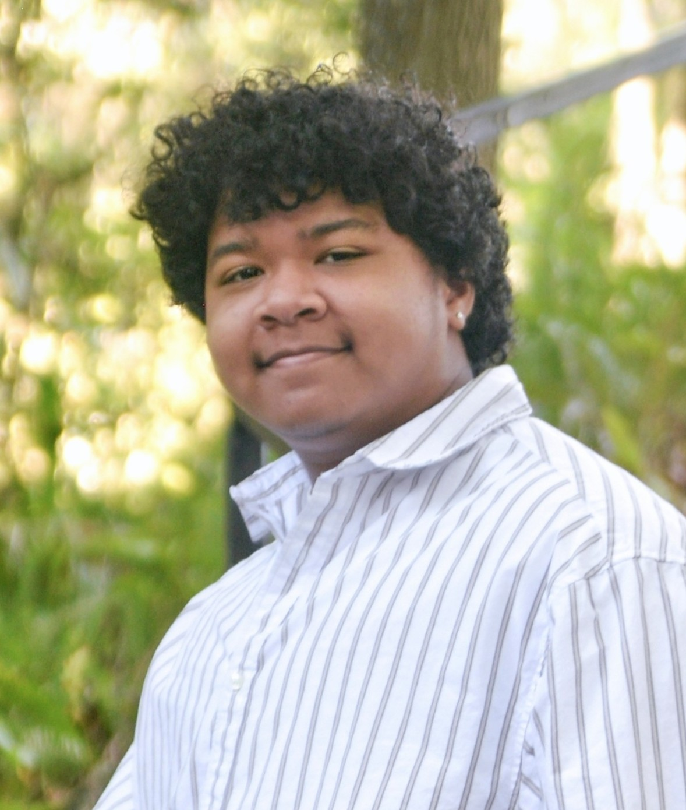

About Me
I'm a technical artist with a passion for visual effects and tooling!
I'm a Computer Science student at the University of Central Florida, where I've taken classes such as Real-time Rendering, Linear Algebra, and Database Systems. Before majoring in CS, I was an animation major where I learned the fundamentals of 3D art and softwares such as Maya and Substance.
My time spent learning animation has given me great perspective that allows me to communicate with artists and build more effective tools. My background in art and my love for programming led me to pursue an intense passion of technical art!
In my free time, I also love drawing and playing games like Breath of the Wild and Dead by Daylight.

Game Dev Knights
Outside of work, I am President of Game Dev Knights -- UCF's official game development club. I lead this 400+ member organization alongside 5 officers.
Beyond coding shaders and debugging engine pipelines, I care most about community. I love bringing developers together, hosting game jams, and building tools or programs that help artists and programmers bring their ideas to life.
Beyond coding shaders and debugging engine pipelines, I care most about community. I love bringing developers together, hosting game jams, and building tools or programs that help artists and programmers bring their ideas to life.